Droits d'accès & chmod
أذونات الوصول وchmod
الشرح بالعربية
الأذونات: r=4 قراءة، w=2 كتابة، x=1 تنفيذ (وللمجلد: عبور). ثلاث فئات: u المالك، g المجموعة، o الآخرون. ls -l يعرض النوع ثم 9 خانات (rwx للمالك، ثم المجموعة، ثم الآخرين). بالثماني: chmod 755 = rwxr-xr-x، و644 = rw-r--r--. بالرمزي: chmod u+x، g-w، o=r، a=rw. أمثلة الامتحان المتكررة: 750، 664، 764 — رتّب الخانات دائمًا u ثم g ثم o.
Illustrations de la leçon
15 planches · cliquez pour agrandir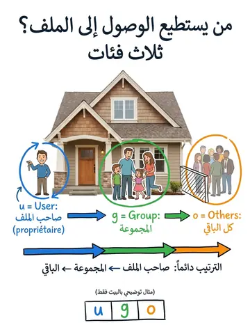
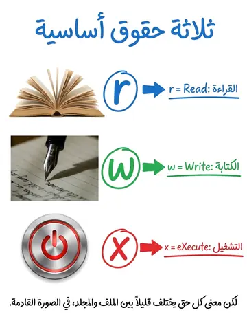
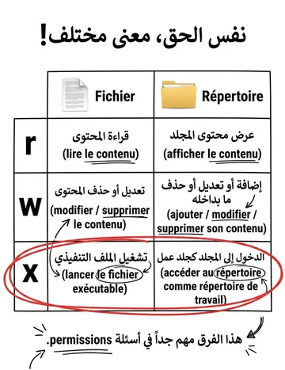
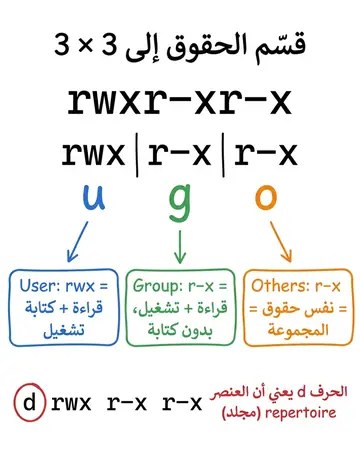
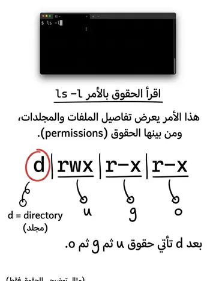
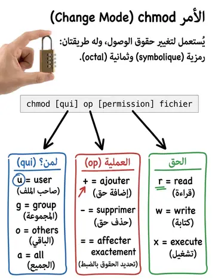
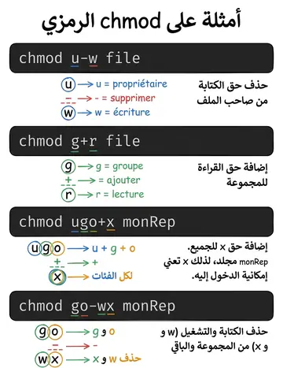
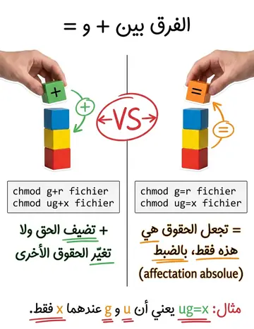
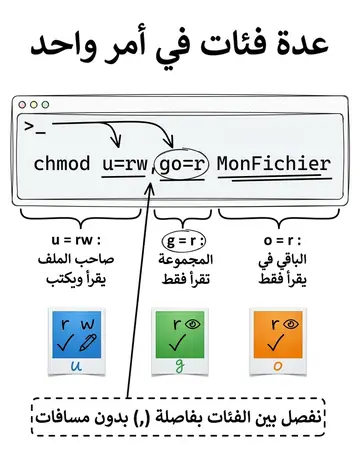
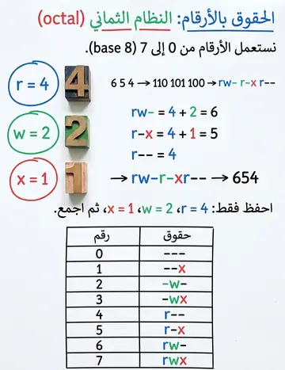
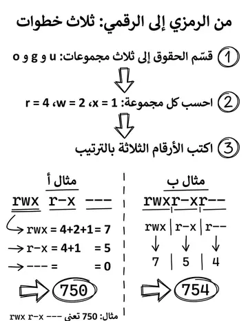
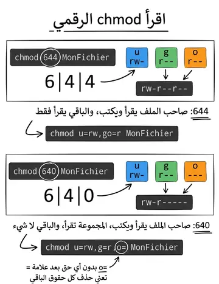
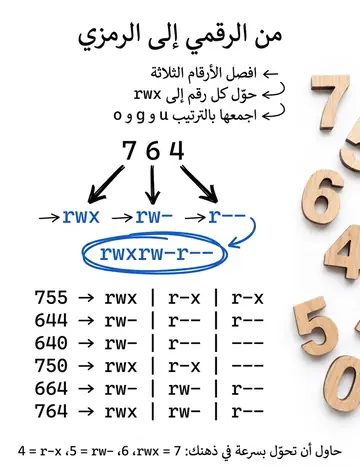
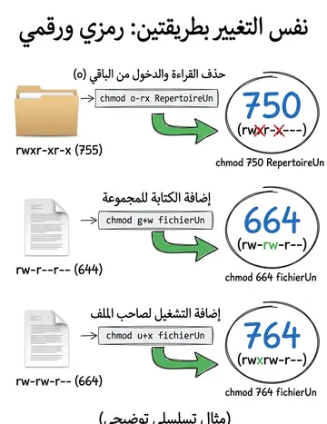
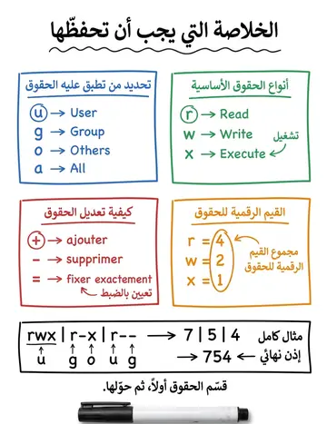
Contenu du cours
Pages 203–220 · texte intégral du support
LES DROITS D’ACCÈS
Sous Linux, chaque fichier (ou répertoire) possède un ensemble d'attributs définissant les droits d'accès à ce fichier pour tous les utilisateurs du système.
Àsa création, un fichier appartient à son auteur.
Le propriétaire du fichier peut ensuite distribuer ou restreindre les droits d'accès sur ce fichier.
Pour chaque classe d'utilisateurs, il y a 3 types d'accès à un fichier donné :
r
: en lecture (Read).
w : en écriture (Write).
x : en exécution (eXecute).
LES DROITS D’ACCÈS
Un droit d’accès est un modèle qui décrit pour chaque fichier
ou chaque répertoire, qui a le droit :
De lire;
D’exécuter;
De modifier.
LES DROITS D’ACCÈS DES FICHIERS ET DES
RÉPERTOIRES
Droits du Propriétaire
Droits du Groupe
Droits du Reste du Monde r w x r w x r w x
LES DROITS D’ACCÈS DES FICHIERS ET DES
RÉPERTOIRES
d rwx r-x r-x
LES DROITS D’ACCÈS
LES DROITS D’ACCÈS À UN
RÉPERTOIRE/FICHIER
Accès
Fichier
Répertoire r
Lire le contenu du fichier
Afficher le contenu du répertoire
wModifier et Supprimer le contenu
du fichierAjouter, Modifier et Supprimer le contenu du répertoire x
Lancer un fichier exécutable
Accéder comme répertoire de travail sur le répertoire
La commande ls -l en console permet d'afficher les détails d'un répertoire ou d'un fichier.
On y découvre alors une somme importante d'information.
D’UNE FAÇON GÉNÉRALE
MODIFICATION DES DROITS D’ACCÈS AUX
FICHIERS
Description des protections par un nombre octal
Mode symbolique
Propriétaire chmod (Change Mode)
MODIFICATION DES DROITS D’ACCÈS AUX
FICHIERS : LE MODE OCTAL
Les droits sont représentés par un nombre octal (Base 8)
De 0 à 7
La représentation binaire (base 2) donne le détail des droits
Exemple : 6 5 4
110 101 100 rw- r-x r--
Ce mode permet de modifier tous les droits en même temps
A utiliser avec précaution
Très efficace pour s’assurer que tous les fichiers ont les mêmes droits
Utilisé pour sécuriser les accès des utilisateurs aux fichiers
MODIFICATION DES DROITS D’ACCÈS AUX
FICHIERS : LE MODE OCTAL
Exemple:
On veut modifier la protection du fichier toto de la manière suivante :
r-x rw- rwx
Autorisant un accès lecture et exécution au propriétaire,
Lecture et écriture au groupe,
Accès sans restriction aux autres (cas très rare).
le mode symbolique, permet une description absolue ou relative
des droits d’accès, comme suit :
chmod [qui] op [permission] fich/repMODIFICATION DES DROITS D’ACCÈS AUX
FICHIERS : LE MODE SYMBOLIQUE
Combinaison de lettre u (user), g (groupe),
(other=autre)
ou a (all=tous) pour ugo
+ : Permet d’ajouter un droit d’accès, - : Permet de supprimer un droit d’accès
= : Permet d’affecter un droit de manière absolue r (read=lecture),
w (write=écriture),x (exécution).
MODIFICATION DES DROITS D’ACCÈS AUX
FICHIERS : LE MODE OCTAL
Le mode est spécifié par un nombre en octal (base 8), dont les chiffres
représentent (dans l'ordre de gauche à droite) :
Les droits pour l'utilisateur propriétaire du fichier.
Les droits pour le groupe propriétaire du fichier.
Les droits pour tous les autres.
Supprimer le droit d’écriture au propriétaire.
$ chmod u -w fileAjouter le droit de lecture pour le groupe.
$ chmod g+r fileAccès uniquement en exécution pour le propriétaire et le groupe, pas de modification pour les autres.
$ chmod ug=x fileMODIFICATION DES DROITS D’ACCÈS AUX
FICHIERS : LE MODE SYMBOLIQUE
chmod ugo+x monRep
Ajoute l'exécution (ouverture) du répertoire monRep à tous (propriétaire, groupe, autres).
chmod go-wx monRep
Supprime l'autorisation d'écriture et l'exécution de monRep au groupe et aux autres.
chmod u=rw, go=r MonFichierFixe l'autorisation de lecture et d'écriture au propriétaire et une autorisation de lecture au groupe et aux autres.
MODIFICATION DES DROITS D’ACCÈS AUX
FICHIERS : LE MODE SYMBOLIQUE
chmod 644 MonFichier
Exactement la même chose , mais en utilisant les valeurs octales (Nota : 6 =
4+2 = lecture + écriture)
chmod u=rw, g=r, o= MonFichierFixe l'autorisation d'ouverture et de lecture au propriétaire, uniquement la lecture au groupe et interdit tout accès aux autres.
chmod 640 MonFichier
Exactement la même chose que ci-dessus mais en utilisant les valeurs octales.
MODIFICATION DES DROITS D’ACCÈS AUX
FICHIERS : LE MODE OCTAL
Interdire la lecture et l'accès au répertoire RepertoireUn aux utilisateurs ne faisant pas partie du groupe en utilisant le mode symbolique.
Donner les droits d'écriture au groupe sur le fichier fichierUn en mode symbolique.
Donner le droit d'exécution sur le fichier fichierUn à l'utilisateur propriétaire en mode symbolique.
Prévoir les droits affichés par la commande ls -l après exécution de ces commandes.
Réécrire les commandes avec l'utilisation numérique de la commande chmod.
LA COMMANDE CHMOD : EXERCICE
Mode symbolique
chmod o-rx RepertoireUn
chmod g+w fichierUn
chmod u+x fichierUn
Mode numérique
chmod 750 RepertoireUn
chmod 664 fichierUn
chmod 764 fichierUn
LA COMMANDE CHMOD : EXERCICE
Des commandes permettent de modifier les règles de droits sur les
fichiers :
chmod : Permet de changer les droits.
chown : Permet de changer le propriétaire (utilisateur et groupe).
chgrp : Permet de changer le groupe propriétaire.
umask : Permet d'indiquer les droits à la création.